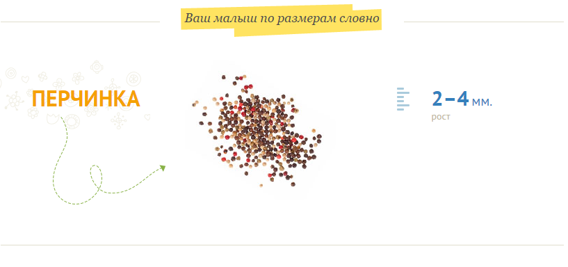
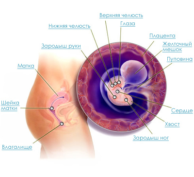

6 неделя беременности

Появляются зачатки глаз, ручек и ножек.
Сердечко бьется с частотой 120 ударов в минуту.
У эмбриона на 6 неделе беременности по бокам «тела» в области сердца появляются два бугорка – зачатки ручек.
Через несколько дней такие же бугорки образуются и в области заднего полюса – будущие ножки. Ручки растут быстрее, чем ножки, и к концу недели уже формируются зачатки кистей рук. В области головного конца нервной трубки появляется утолщение – это зачаток головного мозга.
К середине недели в нем формируются полушария и отделы мозга. Начинается формирование лица: уже определяются зачатки глаз, носа, ушей, верхней и нижней челюсти.
Сердце активно бьется, внутри него образуются камеры (предсердия и желудочки). Сердцебиение уже можно отчетливо определить при проведении УЗИ.
Печень и желточный мешок начинают вырабатывать клетки крови. На 6 неделе беременности у эмбриона образуются зачатки желудка, тонкого и толстого кишечника. Активно продолжается развитие половых органов, и уже в скором времени можно будет узнать пол будущего малыша.
Важным событием этой недели является формирование ворсин хориона (будущей плаценты).
От хориона к эмбриону отходит пупочный канатик (будущая пуповина). Все эти процессы являются подготовкой к полноценному поступлению питательных веществ и кислорода от матери.
Ваш организм затрачивает теперь гораздо больше энергии, чем ранее, поэтому вам свойственно легко утомляться. Ваша грудь растет, в связи с чем вам может казаться, что бюстгальтер становится вам мал.
Вас может сильно тянуть к определенным продуктам.
Некоторые женщины, переживающие утренний токсикоз, несколько теряют в весе в первом триместре. Другие же, наоборот, могут прибавить в весе на полкило или килограмм к моменту их беременности. Частое мочеиспускание является нормальным (хотя и доставляющим неудобства), как и головная боль и перепады настроения.
Идет мощная гормональная перестройка женщины. Так снижается синтез гормонов гипофиза, ответственных за регуляцию менструальных функций, а это ведет к прекращению созревания новых яйцеклеток и прекращению менструаций.
А вот выработка гормона пролактина возрастает в 5-10 раз, он готовит ваши молочные железы к кормлению новорожденного. Беременность на этом сроке характеризуется увеличением размеров щитовидной железы, т.к. обменные процессы увеличиваются (ведь надо же вам за 280 дней из двух клеток (яйцеклетка и сперматозоид) вырастить маленькое чудо.
Не стоит пугаться увеличенной щитовидной железы, однако все же стоит проконсультироваться у врачей и возможно придется сдать анализ на гормоны щитовидной железы, т.к. их увеличение способно привести к спонтанному аборту.
Возможно появление судорог, т.к. функция паращитовидных желез снижена, что сопровождается изменениями обмена кальция.
Внутриутробное развитие эмбриона на 6 неделе беременности
Здоровые советы
Если страдаете от утренней тошноты, старайтесь есть меньше, но чаще.
Крекеры иногда являются лучшим другом беременной женщины. Бюстгальтер с большим уровнем поддержки, имеющий подходящую форму, может облегчить дискомфорт от болезненности груди, а также предотвратить ее выпирание в стороны.
Если вас мучает изжога, старайтесь исключить жирную пищу.
Когда вы встанете на учет в женскую консультацию, вам придется сдать некоторые анализы (общий анализ крови, общий анализ мочи, мазки на микрофлору, биохимический анализ, анализы на ВИЧ и гепатит и некоторые другие, которые назначит врач). Осмотр на кресле у гинеколога предстоит для определения срока беременности, забора анализа (мазка) на микрофлору и потом уже только в конце беременности.
Также вам придется пройти узких специалистов (стоматолога , отоларинголога, окулиста, педиатра, терапевта).
Плохое самочувствие от употребеления нездоровой пищи

Правильное питание и, как следствие, хорошее самочувствие
Врачи
Консультация акушера-гинеколога – врач может подтвердить вашу беременность (если это не было сделано раньше).
Встать на учет в женскую консультацию лучше именно в 6-7 недель, так как раннее медицинское наблюдение поможет снизить риск осложнений во время беременности. На приеме акушер-гинеколог проведет осмотр и даст направления к другим врачам.
Следующая встреча с врачом должна состояться в 10 недель.
Консультация терапевта – врач исключит или подтвердит хронические заболевания у будущей мамы, решит вопрос об их совместимости с беременностью, при необходимости назначит лечение.
Консультация офтальмолога – на основании данных осмотра врач может предположить вероятность развития патологии и дать рекомендации на время беременности и родов при выявлении патологии со стороны глаз.
Консультация стоматолога – врач выявит очаги хронической инфекции в ротовой полости. Невылеченные зубы и десны могут стать причиной распространения инфекции, что зачастую приводит к ухудшению состояния эмбриона. Но лучше лечением зубов заняться еще на этапе подготовки к беременности.
Консультация отоларинголога (ЛОР-врача) – нужна для выявления очагов хронической инфекции в области ушей, носа и горла. При отсутствии лечения эти заболевания могут осложнить беременность.
АНАЛИЗЫ
5 неделя 7 неделяРазвитие плода по неделям